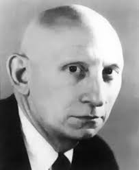
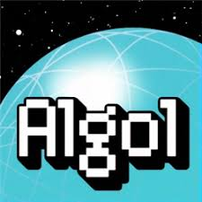

Alan Jay Perlis, born in April 1, 1922 – February 7, 1990,
was an American computer scientist known for his work in
programming languages and the first to receive the Turing
Award.He was awarded the Turing Award in 1966 for his influence
in the area of advanced programming techniques and compiler
construction. This is due to the work he had done as a member
of the team that developed the ALGOL programming language.
Algebraic Oriented Language, Algorithmic Language(ALGOL),
ALGOL had recursive subprograms—procedures that could invoke
themselves to solve a problem by reducing it to a smaller
problem of the same kind. ALGOL introduced block structure,
in which a program is composed of blocks that might contain
both data and instructions and have the same structure as an
entire program. Block structure became a powerful tool for
building large programs out of small components.
